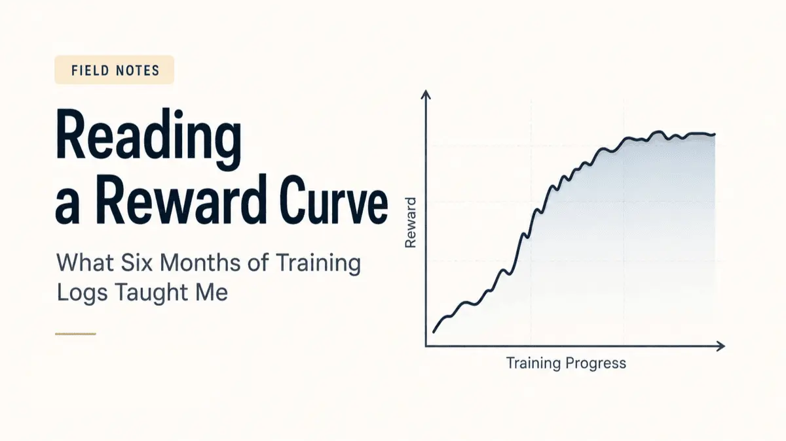
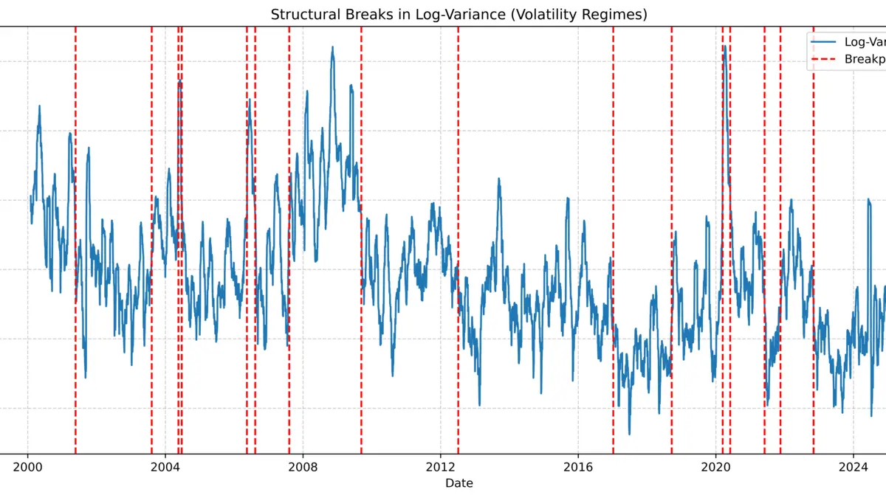

Blog
Notes on markets, models & research
Writing alongside the research journery — research notes, explainers on deep reinforcement learning and portfolio management, and the occasional detour into whatever I'm reading.

Reading a Reward Curve: What Six Months of Training Logs Taught Me
What a noisy training curve tells you about a policy — long before backtest metrics do.
Read post →All posts
No posts match these filters.
Reading a Reward Curve: What Six Months of Training Logs Taught Me
What a noisy training curve tells you about a policy — long before backtest metrics do.
Read post →
Why Deep Reinforcement Learning Might Change Portfolio Management
What DRL agents actually learn, and where they still fall short of a human portfolio manager.
Read post →Welcome — What This Blog Is For
Why I'm writing alongside the PhD, and what to expect from this space.
Read post →